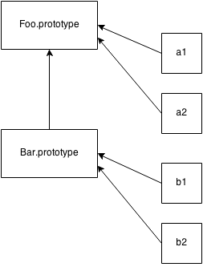

# Chapter 5: Prototypes
In Chapters 3 and 4, we mentioned the [[Prototype]] chain several times, but haven’t said what exactly it is. We will now examine prototypes in detail.
Note: All of the attempts to emulate class-copy behavior, as described previously in Chapter 4, labeled as variations of “mixins”, completely circumvent the [[Prototype]] chain mechanism we examine here in this chapter.
[[Prototype]]Objects in JavaScript have an internal property, denoted in the specification as [[Prototype]], which is simply a reference to another object. Almost all objects are given a non-null value for this property, at the time of their creation.
Note: We will see shortly that it is possible for an object to have an empty [[Prototype]] linkage, though this is somewhat less common.
Consider:
var myObject = { a: 2 }; myObject.a; // 2
What is the [[Prototype]] reference used for? In Chapter 3, we examined the [[Get]] operation that is invoked when you reference a property on an object, such as myObject.a. For that default [[Get]] operation, the first step is to check if the object itself has a property a on it, and if so, it’s used.
Note: ES6 Proxies are outside of our discussion scope in this book (will be covered in a later book in the series!), but everything we discuss here about normal [[Get]] and [[Put]] behavior does not apply if a Proxy is involved.
But it’s what happens if a isn’t present on myObject that brings our attention now to the [[Prototype]] link of the object.
The default [[Get]] operation proceeds to follow the [[Prototype]] link of the object if it cannot find the requested property on the object directly.
var anotherObject = { a: 2 }; // create an object linked to `anotherObject` var myObject = Object.create( anotherObject ); myObject.a; // 2
Note: We will explain what Object.create(..) does, and how it operates, shortly. For now, just assume it creates an object with the [[Prototype]] linkage we’re examining to the object specified.
So, we have myObject that is now [[Prototype]] linked to anotherObject. Clearly myObject.a doesn’t actually exist, but nevertheless, the property access succeeds (being found on anotherObject instead) and indeed finds the value 2.
But, if a weren’t found on anotherObject either, its [[Prototype]] chain, if non-empty, is again consulted and followed.
This process continues until either a matching property name is found, or the [[Prototype]] chain ends. If no matching property is ever found by the end of the chain, the return result from the [[Get]] operation is undefined.
Similar to this [[Prototype]] chain look-up process, if you use a for..in loop to iterate over an object, any property that can be reached via its chain (and is also enumerable – see Chapter 3) will be enumerated. If you use the in operator to test for the existence of a property on an object, in will check the entire chain of the object (regardless of enumerability).
var anotherObject = { a: 2 }; // create an object linked to `anotherObject` var myObject = Object.create( anotherObject ); for (var k in myObject) { console.log("found: " + k); } // found: a ("a" in myObject); // true
So, the [[Prototype]] chain is consulted, one link at a time, when you perform property look-ups in various fashions. The look-up stops once the property is found or the chain ends.
Object.prototypeBut where exactly does the [[Prototype]] chain “end”?
The top-end of every normal [[Prototype]] chain is the built-in Object.prototype. This object includes a variety of common utilities used all over JS, because all normal (built-in, not host-specific extension) objects in JavaScript “descend from” (aka, have at the top of their [[Prototype]] chain) the Object.prototype object.
Some utilities found here you may be familiar with include .toString() and .valueOf(). In Chapter 3, we introduced another: .hasOwnProperty(..). And yet another function on Object.prototype you may not be familiar with, but which we’ll address later in this chapter, is .isPrototypeOf(..).
Back in Chapter 3, we mentioned that setting properties on an object was more nuanced than just adding a new property to the object or changing an existing property’s value. We will now revisit this situation more completely.
myObject.foo = "bar";
If the myObject object already has a normal data accessor property called foo directly present on it, the assignment is as simple as changing the value of the existing property.
If foo is not already present directly on myObject, the [[Prototype]] chain is traversed, just like for the [[Get]] operation. If foo is not found anywhere in the chain, the property foo is added directly to myObject with the specified value, as expected.
However, if foo is already present somewhere higher in the chain, nuanced (and perhaps surprising) behavior can occur with the myObject.foo = "bar" assignment. We’ll examine that more in just a moment.
If the property name foo ends up both on myObject itself and at a higher level of the [[Prototype]] chain that starts at myObject, this is called shadowing. The foo property directly on myObject shadows any foo property which appears higher in the chain, because the myObject.foo look-up would always find the foo property that’s lowest in the chain.
As we just hinted, shadowing foo on myObject is not as simple as it may seem. We will now examine three scenarios for the myObject.foo = "bar" assignment when foo is not already on myObject directly, but is at a higher level of myObject’s [[Prototype]] chain:
foo is found anywhere higher on the [[Prototype]] chain, and it’s not marked as read-only (writable:false) then a new property called foo is added directly to myObject, resulting in a shadowed property.foo is found higher on the [[Prototype]] chain, but it’s marked as read-only (writable:false), then both the setting of that existing property as well as the creation of the shadowed property on myObject are disallowed. If the code is running in strict mode, an error will be thrown. Otherwise, the setting of the property value will silently be ignored. Either way, no shadowing occurs.foo is found higher on the [[Prototype]] chain and it’s a setter (see Chapter 3), then the setter will always be called. No foo will be added to (aka, shadowed on) myObject, nor will the foo setter be redefined.Most developers assume that assignment of a property ([[Put]]) will always result in shadowing if the property already exists higher on the [[Prototype]] chain, but as you can see, that’s only true in one (#1) of the three situations just described.
If you want to shadow foo in cases #2 and #3, you cannot use = assignment, but must instead use Object.defineProperty(..) (see Chapter 3) to add foo to myObject.
Note: Case #2 may be the most surprising of the three. The presence of a read-only property prevents a property of the same name being implicitly created (shadowed) at a lower level of a [[Prototype]] chain. The reason for this restriction is primarily to reinforce the illusion of class-inherited properties. If you think of the foo at a higher level of the chain as having been inherited (copied down) to myObject, then it makes sense to enforce the non-writable nature of that foo property on myObject. If you however separate the illusion from the fact, and recognize that no such inheritance copying actually occured (see Chapters 4 and 5), it’s a little unnatural that myObject would be prevented from having a foo property just because some other object had a non-writable foo on it. It’s even stranger that this restriction only applies to = assignment, but is not enforced when using Object.defineProperty(..).
Shadowing with methods leads to ugly explicit pseudo-polymorphism (see Chapter 4) if you need to delegate between them. Usually, shadowing is more complicated and nuanced than it’s worth, so you should try to avoid it if possible. See Chapter 6 for an alternative design pattern, which among other things discourages shadowing in favor of cleaner alternatives.
Shadowing can even occur implicitly in subtle ways, so care must be taken if trying to avoid it. Consider:
var anotherObject = { a: 2 }; var myObject = Object.create( anotherObject ); anotherObject.a; // 2 myObject.a; // 2 anotherObject.hasOwnProperty( "a" ); // true myObject.hasOwnProperty( "a" ); // false myObject.a++; // oops, implicit shadowing! anotherObject.a; // 2 myObject.a; // 3 myObject.hasOwnProperty( "a" ); // true
Though it may appear that myObject.a++ should (via delegation) look-up and just increment the anotherObject.a property itself in place, instead the ++ operation corresponds to myObject.a = myObject.a + 1. The result is [[Get]] looking up a property via [[Prototype]] to get the current value 2 from anotherObject.a, incrementing the value by one, then [[Put]] assigning the 3 value to a new shadowed property a on myObject. Oops!
Be very careful when dealing with delegated properties that you modify. If you wanted to increment anotherObject.a, the only proper way is anotherObject.a++.
At this point, you might be wondering: “Why does one object need to link to another object?” What’s the real benefit? That is a very appropriate question to ask, but we must first understand what [[Prototype]] is not before we can fully understand and appreciate what it is and how it’s useful.
As we explained in Chapter 4, in JavaScript, there are no abstract patterns/blueprints for objects called “classes” as there are in class-oriented languages. JavaScript just has objects.
In fact, JavaScript is almost unique among languages as perhaps the only language with the right to use the label “object oriented”, because it’s one of a very short list of languages where an object can be created directly, without a class at all.
In JavaScript, classes can’t (being that they don’t exist!) describe what an object can do. The object defines its own behavior directly. There’s just the object.
There’s a peculiar kind of behavior in JavaScript that has been shamelessly abused for years to hack something that looks like “classes”. We’ll examine this approach in detail.
The peculiar “sort-of class” behavior hinges on a strange characteristic of functions: all functions by default get a public, non-enumerable (see Chapter 3) property on them called prototype, which points at an otherwise arbitrary object.
function Foo() { // ... } Foo.prototype; // { }
This object is often called “Foo’s prototype”, because we access it via an unfortunately-named property Foo.prototype property reference. However, that terminology is hopelessly destined to lead us into confusion, as we’ll see shortly. Instead, I will call it “the object formerly known as Foo’s prototype”. Just kidding. How about: “object arbitrarily labeled ‘Foo dot prototype’”?
Whatever we call it, what exactly is this object?
The most direct way to explain it is that each object created from calling new Foo() (see Chapter 2) will end up (somewhat arbitrarily) [[Prototype]]-linked to this “Foo dot prototype” object.
Let’s illustrate:
function Foo() { // ... } var a = new Foo(); Object.getPrototypeOf( a ) === Foo.prototype; // true
When a is created by calling new Foo(), one of the things (see Chapter 2 for all four steps) that happens is that a gets an internal [[Prototype]] link to the object that Foo.prototype is pointing at.
Stop for a moment and ponder the implications of that statement.
In class-oriented languages, multiple copies (aka, “instances”) of a class can be made, like stamping something out from a mold. As we saw in Chapter 4, this happens because the process of instantiating (or inheriting from) a class means, “copy the behavior plan from that class into a physical object”, and this is done again for each new instance.
But in JavaScript, there are no such copy-actions performed. You don’t create multiple instances of a class. You can create multiple objects that [[Prototype]] link to a common object. But by default, no copying occurs, and thus these objects don’t end up totally separate and disconnected from each other, but rather, quite linked.
new Foo() results in a new object (we called it a), and that new object a is internally [[Prototype]] linked to the Foo.prototype object.
We end up with two objects, linked to each other. That’s it. We didn’t instantiate a class. We certainly didn’t do any copying of behavior from a “class” into a concrete object. We just caused two objects to be linked to each other.
In fact, the secret, which eludes most JS developers, is that the new Foo() function calling had really almost nothing direct to do with the process of creating the link. It was sort of an accidental side-effect. new Foo() is an indirect, round-about way to end up with what we want: a new object linked to another object.
Can we get what we want in a more direct way? Yes! The hero is Object.create(..). But we’ll get to that in a little bit.
In JavaScript, we don’t make copies from one object (“class”) to another (“instance”). We make links between objects. For the [[Prototype]] mechanism, visually, the arrows move from right to left, and from bottom to top.

This mechanism is often called “prototypal inheritance” (we’ll explore the code in detail shortly), which is commonly said to be the dynamic-language version of “classical inheritance”. It’s an attempt to piggy-back on the common understanding of what “inheritance” means in the class-oriented world, but tweak (read: pave over) the understood semantics, to fit dynamic scripting.
The word “inheritance” has a very strong meaning (see Chapter 4), with plenty of mental precedent. Merely adding “prototypal” in front to distinguish the actually nearly opposite behavior in JavaScript has left in its wake nearly two decades of mirey confusion.
I like to say that sticking “prototypal” in front “inheritance” to drastically reverse its actual meaning is like holding an orange in one hand, an apple in the other, and insisting on calling the apple a “red orange”. No matter what confusing label I put in front of it, that doesn’t change the fact that one fruit is an apple and the other is an orange.
The better approach is to plainly call an apple an apple – to use the most accurate and direct terminology. That makes it easier to understand both their similarities and their many differences, because we all have a simple, shared understanding of what “apple” means.
Because of the confusion and conflation of terms, I believe the label “prototypal inheritance” itself (and trying to mis-apply all its associated class-orientation terminology, like “class”, “constructor”, “instance”, “polymorphism”, etc) has done more harm than good in explaining how JavaScript’s mechanism really works.
“Inheritance” implies a copy operation, and JavaScript doesn’t copy object properties (natively, by default). Instead, JS creates a link between two objects, where one object can essentially delegate property/function access to another object. “Delegation” (see Chapter 6) is a much more accurate term for JavaScript’s object-linking mechanism.
Another term which is sometimes thrown around in JavaScript is “differential inheritance”. The idea here is that we describe an object’s behavior in terms of what is different from a more general descriptor. For example, you explain that a car is a kind of vehicle, but one that has exactly 4 wheels, rather than re-describing all the specifics of what makes up a general vehicle (engine, etc).
If you try to think of any given object in JS as the sum total of all behavior that is available via delegation, and in your mind you flatten all that behavior into one tangible thing, then you can (sorta) see how “differential inheritance” might fit.
But just like with “prototypal inheritance”, “differential inheritance” pretends that your mental model is more important than what is physcially happening in the language. It overlooks the fact that object B is not actually differentially constructed, but is instead built with specific characteristics defined, alongside “holes” where nothing is defined. It is in these “holes” (gaps in, or lack of, definition) that delegation can take over and, on the fly, “fill them in” with delegated behavior.
The object is not, by native default, flattened into the single differential object, through copying, that the mental model of “differential inheritance” implies. As such, “differential inheritance” is just not as natural a fit for describing how JavaScript’s [[Prototype]] mechanism actually works.
You can choose to prefer the “differential inheritance” terminology and mental model, as a matter of taste, but there’s no denying the fact that it only fits the mental acrobatics in your mind, not the physical behavior in the engine.
Let’s go back to some earlier code:
function Foo() { // ... } var a = new Foo();
What exactly leads us to think Foo is a “class”?
For one, we see the use of the new keyword, just like class-oriented languages do when they construct class instances. For another, it appears that we are in fact executing a constructor method of a class, because Foo() is actually a method that gets called, just like how a real class’s constructor gets called when you instantiate that class.
To further the confusion of “constructor” semantics, the arbitrarily labeled Foo.prototype object has another trick up its sleeve. Consider this code:
function Foo() { // ... } Foo.prototype.constructor === Foo; // true var a = new Foo(); a.constructor === Foo; // true
The Foo.prototype object by default (at declaration time on line 1 of the snippet!) gets a public, non-enumerable (see Chapter 3) property called .constructor, and this property is a reference back to the function (Foo in this case) that the object is associated with. Moreover, we see that object a created by the “constructor” call new Foo() seems to also have a property on it called .constructor which similarly points to “the function which created it”.
Note: This is not actually true. a has no .constructor property on it, and though a.constructor does in fact resolve to the Foo function, “constructor” does not actually mean “was constructed by”, as it appears. We’ll explain this strangeness shortly.
Oh, yeah, also… by convention in the JavaScript world, “class”es are named with a capital letter, so the fact that it’s Foo instead of foo is a strong clue that we intend it to be a “class”. That’s totally obvious to you, right!?
Note: This convention is so strong that many JS linters actually complain if you call new on a method with a lowercase name, or if we don’t call new on a function that happens to start with a capital letter. That sort of boggles the mind that we struggle so much to get (fake) “class-orientation” right in JavaScript that we create linter rules to ensure we use capital letters, even though the capital letter doesn’t mean anything at all to the JS engine.
In the above snippet, it’s tempting to think that Foo is a “constructor”, because we call it with new and we observe that it “constructs” an object.
In reality, Foo is no more a “constructor” than any other function in your program. Functions themselves are not constructors. However, when you put the new keyword in front of a normal function call, that makes that function call a “constructor call”. In fact, new sort of hijacks any normal function and calls it in a fashion that constructs an object, in addition to whatever else it was going to do.
For example:
function NothingSpecial() { console.log( "Don't mind me!" ); } var a = new NothingSpecial(); // "Don't mind me!" a; // {}
NothingSpecial is just a plain old normal function, but when called with new, it constructs an object, almost as a side-effect, which we happen to assign to a. The call was a constructor call, but NothingSpecial is not, in and of itself, a constructor.
In other words, in JavaScript, it’s most appropriate to say that a “constructor” is any function called with the new keyword in front of it.
Functions aren’t constructors, but function calls are “constructor calls” if and only if new is used.
Are those the only common triggers for ill-fated “class” discussions in JavaScript?
Not quite. JS developers have strived to simulate as much as they can of class-orientation:
function Foo(name) { this.name = name; } Foo.prototype.myName = function() { return this.name; }; var a = new Foo( "a" ); var b = new Foo( "b" ); a.myName(); // "a" b.myName(); // "b"
This snippet shows two additional “class-orientation” tricks in play:
this.name = name: adds the .name property onto each object (a and b, respectively; see Chapter 2 about this binding), similar to how class instances encapsulate data values.
Foo.prototype.myName = ...: perhaps the more interesting technique, this adds a property (function) to the Foo.prototype object. Now, a.myName() works, but perhaps surprisingly. How?
In the above snippet, it’s strongly tempting to think that when a and b are created, the properties/functions on the Foo.prototype object are copied over to each of a and b objects. However, that’s not what happens.
At the beginning of this chapter, we explained the [[Prototype]] link, and how it provides the fall-back look-up steps if a property reference isn’t found directly on an object, as part of the default [[Get]] algorithm.
So, by virtue of how they are created, a and b each end up with an internal [[Prototype]] linkage to Foo.prototype. When myName is not found on a or b, respectively, it’s instead found (through delegation, see Chapter 6) on Foo.prototype.
Recall the discussion from earlier about the .constructor property, and how it seems like a.constructor === Foo being true means that a has an actual .constructor property on it, pointing at Foo? Not correct.
This is just unfortunate confusion. In actuality, the .constructor reference is also delegated up to Foo.prototype, which happens to, by default, have a .constructor that points at Foo.
It seems awfully convenient that an object a “constructed by” Foo would have access to a .constructor property that points to Foo. But that’s nothing more than a false sense of security. It’s a happy accident, almost tangentially, that a.constructor happens to point at Foo via this default [[Prototype]] delegation. There’s actually several ways that the ill-fated assumption of .constructor meaning “was constructed by” can come back to bite you.
For one, the .constructor property on Foo.prototype is only there by default on the object created when Foo the function is declared. If you create a new object, and replace a function’s default .prototype object reference, the new object will not by default magically get a .constructor on it.
Consider:
function Foo() { /* .. */ } Foo.prototype = { /* .. */ }; // create a new prototype object var a1 = new Foo(); a1.constructor === Foo; // false! a1.constructor === Object; // true!
Object(..) didn’t “construct” a1 did it? It sure seems like Foo() “constructed” it. Many developers think of Foo() as doing the construction, but where everything falls apart is when you think “constructor” means “was constructed by”, because by that reasoning, a1.constructor should be Foo, but it isn’t!
What’s happening? a1 has no .constructor property, so it delegates up the [[Prototype]] chain to Foo.prototype. But that object doesn’t have a .constructor either (like the default Foo.prototype object would have had!), so it keeps delegating, this time up to Object.prototype, the top of the delegation chain. That object indeed has a .constructor on it, which points to the built-in Object(..) function.
Misconception, busted.
Of course, you can add .constructor back to the Foo.prototype object, but this takes manual work, especially if you want to match native behavior and have it be non-enumerable (see Chapter 3).
For example:
function Foo() { /* .. */ } Foo.prototype = { /* .. */ }; // create a new prototype object // Need to properly "fix" the missing `.constructor` // property on the new object serving as `Foo.prototype`. // See Chapter 3 for `defineProperty(..)`. Object.defineProperty( Foo.prototype, "constructor" , { enumerable: false, writable: true, configurable: true, value: Foo // point `.constructor` at `Foo` } );
That’s a lot of manual work to fix .constructor. Moreover, all we’re really doing is perpetuating the misconception that “constructor” means “was constructed by”. That’s an expensive illusion.
The fact is, .constructor on an object arbitrarily points, by default, at a function who, reciprocally, has a reference back to the object – a reference which it calls .prototype. The words “constructor” and “prototype” only have a loose default meaning that might or might not hold true later. The best thing to do is remind yourself, “constructor does not mean constructed by”.
.constructor is not a magic immutable property. It is non-enumerable (see snippet above), but its value is writable (can be changed), and moreover, you can add or overwrite (intentionally or accidentally) a property of the name constructor on any object in any [[Prototype]] chain, with any value you see fit.
By virtue of how the [[Get]] algorithm traverses the [[Prototype]] chain, a .constructor property reference found anywhere may resolve quite differently than you’d expect.
See how arbitrary its meaning actually is?
The result? Some arbitrary object-property reference like a1.constructor cannot actually be trusted to be the assumed default function reference. Moreover, as we’ll see shortly, just by simple omission, a1.constructor can even end up pointing somewhere quite surprising and insensible.
a1.constructor is extremely unreliable, and an unsafe reference to rely upon in your code. Generally, such references should be avoided where possible.
We’ve seen some approximations of “class” mechanics as typically hacked into JavaScript programs. But JavaScript “class”es would be rather hollow if we didn’t have an approximation of “inheritance”.
Actually, we’ve already seen the mechanism which is commonly called “prototypal inheritance” at work when a was able to “inherit from” Foo.prototype, and thus get access to the myName() function. But we traditionally think of “inheritance” as being a relationship between two “classes”, rather than between “class” and “instance”.
Recall this figure from earlier, which shows not only delegation from an object (aka, “instance”) a1 to object Foo.prototype, but from Bar.prototype to Foo.prototype, which somewhat resembles the concept of Parent-Child class inheritance. Resembles, except of course for the direction of the arrows, which show these are delegation links rather than copy operations.
And, here’s the typical “prototype style” code that creates such links:
function Foo(name) { this.name = name; } Foo.prototype.myName = function() { return this.name; }; function Bar(name,label) { Foo.call( this, name ); this.label = label; } // here, we make a new `Bar.prototype` // linked to `Foo.prototype` Bar.prototype = Object.create( Foo.prototype ); // Beware! Now `Bar.prototype.constructor` is gone, // and might need to be manually "fixed" if you're // in the habit of relying on such properties! Bar.prototype.myLabel = function() { return this.label; }; var a = new Bar( "a", "obj a" ); a.myName(); // "a" a.myLabel(); // "obj a"
Note: To understand why this points to a in the above code snippet, see Chapter 2.
The important part is Bar.prototype = Object.create( Foo.prototype ). Object.create(..) creates a “new” object out of thin air, and links that new object’s internal [[Prototype]] to the object you specify (Foo.prototype in this case).
In other words, that line says: “make a new ‘Bar dot prototype’ object that’s linked to ‘Foo dot prototype’.”
When function Bar() { .. } is declared, Bar, like any other function, has a .prototype link to its default object. But that object is not linked to Foo.prototype like we want. So, we create a new object that is linked as we want, effectively throwing away the original incorrectly-linked object.
Note: A common mis-conception/confusion here is that either of the following approaches would also work, but they do not work as you’d expect:
// doesn't work like you want! Bar.prototype = Foo.prototype; // works kinda like you want, but with // side-effects you probably don't want :( Bar.prototype = new Foo();
Bar.prototype = Foo.prototype doesn’t create a new object for Bar.prototype to be linked to. It just makes Bar.prototype be another reference to Foo.prototype, which effectively links Bar directly to the same object as Foo links to: Foo.prototype. This means when you start assigning, like Bar.prototype.myLabel = ..., you’re modifying not a separate object but the shared Foo.prototype object itself, which would affect any objects linked to Foo.prototype. This is almost certainly not what you want. If it is what you want, then you likely don’t need Bar at all, and should just use only Foo and make your code simpler.
Bar.prototype = new Foo() does in fact create a new object which is duly linked to Foo.prototype as we’d want. But, it used the Foo(..) “constructor call” to do it. If that function has any side-effects (such as logging, changing state, registering against other objects, adding data properties to this, etc), those side-effects happen at the time of this linking (and likely against the wrong object!), rather than only when the eventual Bar() “descendents” are created, as would likely be expected.
So, we’re left with using Object.create(..) to make a new object that’s properly linked, but without having the side-effects of calling Foo(..). The slight downside is that we have to create a new object, throwing the old one away, instead of modifying the existing default object we’re provided.
It would be nice if there was a standard and reliable way to modify the linkage of an existing object. Prior to ES6, there’s a non-standard and not fully-cross-browser way, via the .__proto__ property, which is setable. ES6 adds a Object.setPrototypeOf(..) helper utility, which does the trick in a standard and predictable way.
Compare the pre-ES6 and ES6-standardized techniques for linking Bar.prototype to Foo.prototype, side-by-side:
// pre-ES6 // throws away default existing `Bar.prototype` Bar.prototype = Object.create( Foo.prototype ); // ES6+ // modifies existing `Bar.prototype` Object.setPrototypeOf( Bar.prototype, Foo.prototype );
Ignoring the slight performance disadvantage (throwing away an object that’s later garbage collected) of the Object.create(..) approach, it’s a little bit shorter and may be perhaps a little easier to read than the ES6+ approach. But it’s probably a syntactic wash either way.
What if you have an object like a and want to find out what object (if any) it delegates to? Inspecting an instance (just an object in JS) for its inheritance ancestry (delegation linkage in JS) is often called introspection (or reflection) in traditional class-oriented environments.
Consider:
function Foo() { // ... } Foo.prototype.blah = ...; var a = new Foo();
How do we then introspect a to find out its “ancestry” (delegation linkage)? The first approach embraces the “class” confusion:
a instanceof Foo; // true
The instanceof operator takes a plain object as its left-hand operand and a function as its right-hand operand. The question instanceof answers is: in the entire [[Prototype]] chain of a, does the object arbitrarily pointed to by Foo.prototype ever appear?
Unfortunately, this means that you can only inquire about the “ancestry” of some object (a) if you have some function (Foo, with its attached .prototype reference) to test with. If you have two arbitrary objects, say a and b, and want to find out if the objects are related to each other through a [[Prototype]] chain, instanceof alone can’t help.
Note: If you use the built-in .bind(..) utility to make a hard-bound function (see Chapter 2), the function created will not have a .prototype property. Using instanceof with such a function transparently substitutes the .prototype of the target function that the hard-bound function was created from.
It’s fairly uncommon to use hard-bound functions as “constructor calls”, but if you do, it will behave as if the original target function was invoked instead, which means that using instanceof with a hard-bound function also behaves according to the original function.
This snippet illustrates the ridiculousness of trying to reason about relationships between two objects using “class” semantics and instanceof:
// helper utility to see if `o1` is // related to (delegates to) `o2` function isRelatedTo(o1, o2) { function F(){} F.prototype = o2; return o1 instanceof F; } var a = {}; var b = Object.create( a ); isRelatedTo( b, a ); // true
Inside isRelatedTo(..), we borrow a throw-away function F, reassign its .prototype to arbitrarily point to some object o2, then ask if o1 is an “instance of” F. Obviously o1 wasn’t actually inherited or descended or even constructed from F, so it should be clear why this kind of exercise is silly and confusing. The problem comes down to the awkwardness of class semantics forced upon JavaScript, in this case as revealed by the indirect semantics of instanceof.
The second, and much cleaner, approach to [[Prototype]] reflection is:
Foo.prototype.isPrototypeOf( a ); // true
Notice that in this case, we don’t really care (or even need) Foo, we just need an object (in our case, arbitrarily labeled Foo.prototype) to test against another object. The question isPrototypeOf(..) answers is: in the entire [[Prototype]] chain of a, does Foo.prototype ever appear?
Same question, and exact same answer. But in this second approach, we don’t actually need the indirection of referencing a function (Foo) whose .prototype property will automatically be consulted.
We just need two objects to inspect a relationship between them. For example:
// Simply: does `b` appear anywhere in // `c`s [[Prototype]] chain? b.isPrototypeOf( c );
Notice, this approach doesn’t require a function (“class”) at all. It just uses object references directly to b and c, and inquires about their relationship. In other words, our isRelatedTo(..) utility above is built-in to the language, and it’s called isPrototypeOf(..).
We can also directly retrieve the [[Prototype]] of an object. As of ES5, the standard way to do this is:
Object.getPrototypeOf( a );
And you’ll notice that object reference is what we’d expect:
Object.getPrototypeOf( a ) === Foo.prototype; // true
Most browsers (not all!) have also long supported a non-standard alternate way of accessing the internal [[Prototype]]:
a.__proto__ === Foo.prototype; // true
The strange .__proto__ (not standardized until ES6!) property “magically” retrieves the internal [[Prototype]] of an object as a reference, which is quite helpful if you want to directly inspect (or even traverse: .__proto__.__proto__...) the chain.
Just as we saw earlier with .constructor, .__proto__ doesn’t actually exist on the object you’re inspecting (a in our running example). In fact, it exists (non-enumerable; see Chapter 2) on the built-in Object.prototype, along with the other common utilities (.toString(), .isPrototypeOf(..), etc).
Moreover, .__proto__ looks like a property, but it’s actually more appropriate to think of it as a getter/setter (see Chapter 3).
Roughly, we could envision .__proto__ implemented (see Chapter 3 for object property definitions) like this:
Object.defineProperty( Object.prototype, "__proto__", { get: function() { return Object.getPrototypeOf( this ); }, set: function(o) { // setPrototypeOf(..) as of ES6 Object.setPrototypeOf( this, o ); return o; } } );
So, when we access (retrieve the value of) a.__proto__, it’s like calling a.__proto__() (calling the getter function). That function call has a as its this even though the getter function exists on the Object.prototype object (see Chapter 2 for this binding rules), so it’s just like saying Object.getPrototypeOf( a ).
.__proto__ is also a settable property, just like using ES6’s Object.setPrototypeOf(..) shown earlier. However, generally you should not change the [[Prototype]] of an existing object.
There are some very complex, advanced techniques used deep in some frameworks that allow tricks like “subclassing” an Array, but this is commonly frowned on in general programming practice, as it usually leads to much harder to understand/maintain code.
Note: As of ES6, the class keyword will allow something that approximates “subclassing” of built-in’s like Array. See Appendix A for discussion of the class syntax added in ES6.
The only other narrow exception (as mentioned earlier) would be setting the [[Prototype]] of a default function’s .prototype object to reference some other object (besides Object.prototype). That would avoid replacing that default object entirely with a new linked object. Otherwise, it’s best to treat object `[[Prototype]] linkage as a read-only characteristic for ease of reading your code later.
Note: The JavaScript community unofficially coined a term for the double-underscore, specifically the leading one in properties like __proto__: “dunder”. So, the “cool kids” in JavaScript would generally pronounce __proto__ as “dunder proto”.
As we’ve now seen, the [[Prototype]] mechanism is an internal link that exists on one object which references some other object.
This linkage is (primarily) exercised when a property/method reference is made against the first object, and no such property/method exists. In that case, the [[Prototype]] linkage tells the engine to look for the property/method on the linked-to object. In turn, if that object cannot fulfill the look-up, its [[Prototype]] is followed, and so on. This series of links between objects forms what is called the “prototype chain”.
Create()ing LinksWe’ve thoroughly debunked why JavaScript’s [[Prototype]] mechanism is not like classes, and we’ve seen how it instead creates links between proper objects.
What’s the point of the [[Prototype]] mechanism? Why is it so common for JS developers to go to so much effort (emulating classes) in their code to wire up these linkages?
Remember we said much earlier in this chapter that Object.create(..) would be a hero? Now, we’re ready to see how.
var foo = { something: function() { console.log( "Tell me something good..." ); } }; var bar = Object.create( foo ); bar.something(); // Tell me something good...
Object.create(..) creates a new object (bar) linked to the object we specified (foo), which gives us all the power (delegation) of the [[Prototype]] mechanism, but without any of the unnecessary complication of new functions acting as classes and constructor calls, confusing .prototype and .constructor references, or any of that extra stuff.
Note: Object.create(null) creates an object that has an empty (aka, null) [[Prototype]] linkage, and thus the object can’t delegate anywhere. Since such an object has no prototype chain, the instanceof operator (explained earlier) has nothing to check, so it will always return false. These special empty-[[Prototype]] objects are often called “dictionaries” as they are typically used purely for storing data in properties, mostly because they have no possible surprise effects from any delegated properties/functions on the [[Prototype]] chain, and are thus purely flat data storage.
We don’t need classes to create meaningful relationships between two objects. The only thing we should really care about is objects linked together for delegation, and Object.create(..) gives us that linkage without all the class cruft.
Object.create() PolyfilledObject.create(..) was added in ES5. You may need to support pre-ES5 environments (like older IE’s), so let’s take a look at a simple partial polyfill for Object.create(..) that gives us the capability that we need even in those older JS environments:
if (!Object.create) { Object.create = function(o) { function F(){} F.prototype = o; return new F(); }; }
This polyfill works by using a throw-away F function, which we override its .prototype property to point to the object we want to link to. Then we use new F() construction to make a new object that will be linked as we specified.
This usage of Object.create(..) is by far the most common usage, because it’s the part that can be polyfilled. There’s an additional set of functionality that the standard ES5 built-in Object.create(..) provides, which is not polyfillable for pre-ES5. As such, this capability is far-less commonly used. For completeness sake, let’s look at that additional functionality:
var anotherObject = { a: 2 }; var myObject = Object.create( anotherObject, { b: { enumerable: false, writable: true, configurable: false, value: 3 }, c: { enumerable: true, writable: false, configurable: false, value: 4 } } ); myObject.hasOwnProperty( "a" ); // false myObject.hasOwnProperty( "b" ); // true myObject.hasOwnProperty( "c" ); // true myObject.a; // 2 myObject.b; // 3 myObject.c; // 4
The second argument to Object.create(..) specifies property names to add to the newly created object, via declaring each new property’s property descriptor (see Chapter 3). Because polyfilling property descriptors into pre-ES5 is not possible, this additional functionality on Object.create(..) also cannot polyfilled.
The vast majority of usage of Object.create(..) uses the polyfill-safe subset of functionality, so most developers are fine with using the partial polyfill in pre-ES5 environments.
Some developers take a much stricter view, which is that no function should be polyfilled unless it can be fully polyfilled. Since Object.create(..) is one of those partial-polyfill’able utilities, this narrower perspective says that if you need to use any of the functionality of Object.create(..) in a pre-ES5 environment, instead of polyfilling, you should use a custom utility, and stay away from using the name Object.create entirely. You could instead define your own utility, like:
function createAndLinkObject(o) { function F(){} F.prototype = o; return new F(); } var anotherObject = { a: 2 }; var myObject = createAndLinkObject( anotherObject ); myObject.a; // 2
I do not share this strict opinion. I fully endorse the common partial-polyfill of Object.create(..) as shown above, and using it in your code even in pre-ES5. I’ll leave it to you to make your own decision.
It may be tempting to think that these links between object primarily provide a sort of fallback for “missing” properties or methods. While that may be an observed outcome, I don’t think it represents the right way of thinking about [[Prototype]].
Consider:
var anotherObject = { cool: function() { console.log( "cool!" ); } }; var myObject = Object.create( anotherObject ); myObject.cool(); // "cool!"
That code will work by virtue of [[Prototype]], but if you wrote it that way so that anotherObject was acting as a fallback just in case myObject couldn’t handle some property/method that some developer may try to call, odds are that your software is going to be a bit more “magical” and harder to understand and maintain.
That’s not to say there aren’t cases where fallbacks are an appropriate design pattern, but it’s not very common or idiomatic in JS, so if you find yourself doing so, you might want to take a step back and reconsider if that’s really appropriate and sensible design.
Note: In ES6, an advanced functionality called Proxy is introduced which can provide something of a “method not found” type of behavior. Proxy is beyond the scope of this book, but will be covered in detail in a later book in the “You Don’t Know JS” series.
Don’t miss an important but nuanced point here.
Designing software where you intend for a developer to for instance call myObject.cool() and have that work even though there is no cool() method on myObject introduces some “magic” into your API design that can be surprising for future developers who maintain your software.
You can however design your API with less “magic” to it, but still take advantage of the power of [[Prototype]] linkage.
var anotherObject = { cool: function() { console.log( "cool!" ); } }; var myObject = Object.create( anotherObject ); myObject.doCool = function() { this.cool(); // internal delegation! }; myObject.doCool(); // "cool!"
Here, we call myObject.doCool(), which is a method that actually exists on myObject, making our API design more explicit (less “magical”). Internally, our implementation follows the delegation design pattern (see Chapter 6), taking advantage of [[Prototype]] delegation to anotherObject.cool().
In other words, delegation will tend to be less surprising/confusing if it’s an internal implementation detail rather than plainly exposed in your API interface design. We will expound on delegation in great detail in the next chapter.
When attempting a property access on an object that doesn’t have that property, the object’s internal [[Prototype]] linkage defines where the [[Get]] operation (see Chapter 3) should look next. This cascading linkage from object to object essentially defines a “prototype chain” (somewhat similar to a nested scope chain) of objects to traverse for property resolution.
All normal objects have the built-in Object.prototype as the top of the prototype chain (like the global scope in scope look-up), where property resolution will stop if not found anywhere prior in the chain. toString(), valueOf(), and several other common utilities exist on this Object.prototype object, explaining how all objects in the language are able to access them.
The most common way to get two objects linked to each other is using the new keyword with a function call, which among its four steps (see Chapter 2), it creates a new object linked to another object.
The “another object” that the new object is linked to happens to be the object referenced by the arbitrarily named .prototype property of the function called with new. Functions called with new are often called “constructors”, despite the fact that they are not actually instantiating a class as constructors do in traditional class-oriented languages.
While these JavaScript mechanisms can seem to resemble “class instantiation” and “class inheritance” from traditional class-oriented languages, the key distinction is that in JavaScript, no copies are made. Rather, objects end up linked to each other via an internal [[Prototype]] chain.
For a variety of reasons, not the least of which is terminology precedent, “inheritance” (and “prototypal inheritance”) and all the other OO terms just do not make sense when considering how JavaScript actually works (not just applied to our forced mental models).
Instead, “delegation” is a more appropriate term, because these relationships are not copies but delegation links.